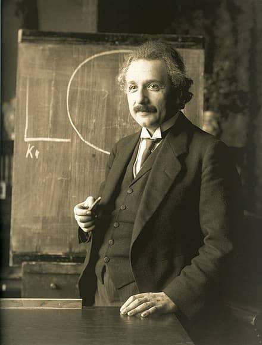

About Albert Einstein
Albert Einstein (1879-1955) was a German-born theoretical physicist who is widely held as one of the most influential scientists. Best known for developing the theory of relativity, Einstein also made contribution to quantum mechanics.
His mass-energy equivalence formula E=mc2, which arises from relatiity theory, has been called "the world's most famous equation".
He received the nobel prize in physics "for his services to theoretical physics, and especially for his discovery of the law of photoelectric effect", a pivotal step in the development of the quantum theory.
A Photo of Albert Einstein
Born:
14th of March 1879. Ulm Kingdom of Wurttenburg, German Empire
Died:
18th of April 1955. Princeton, New Jersey,U.S.A
Citizenship
- Kingdom of Wurttenburg, part of the German Empire (until 1896)
- Stateless (1896-1901)
- Switzerland (1901-1955)
- Austria, part of the Astro-Hungarian Empire (1911-1912)
- Kingdom of Prussia, part of the German Empire (1914-1918)
- Free state of Prussia, Weimar Republic (1918-1933)
- United States (1940-1955)
Education:
Swiss Federal Polytechnic School in Zurich (Diplo, 1900)
University of Zurich (PhD, 1905)
Awards:
- Barnard Medal for Meritorious Service to Science, 1920
- Nobel Prize in physics, 1921
- Matteucci Medal, 1921
- ForMemRS, 1921
- Cospley Medal, 1925
- Gold Medal of RAS, 1926
- Max Planck Medal, 1929
- Membership of NASA, 1942
- Time Person of the Century, 1999
Inspirational Quotes
"Imagination is more important than knowledge. Knowledge is limited. Imagination encircles the world."
— Albert Einstein
"The important thing is not to stop questioning. Curiosity has its own reason for existence."
— Albert Einstein
"The only thing that interferes with my learning is my Education."
— Albert Einstein
"Life is like riding a bicycle. To keep your balance, you must keep moving."
— Albert Einstein
"The secret to creativity is knowing how to hide your sources."
— Albert Einstein
"The distinction between past, present, and future is only a stubbornly persistent illusion."
— Albert Einstein
"The value of college education is not the learning of many facts but the training of the mind to think."
— Albert Einstein